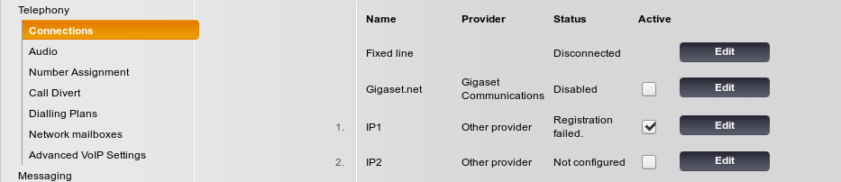
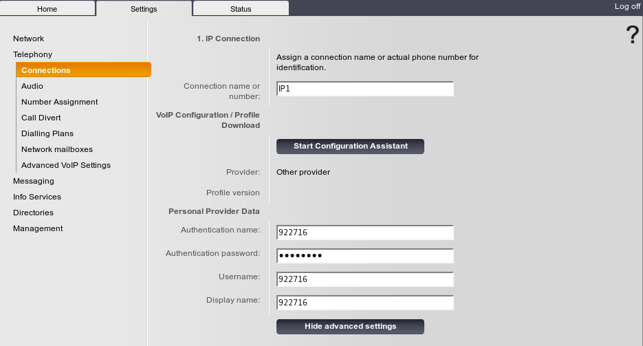
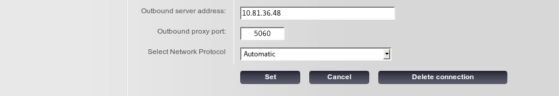
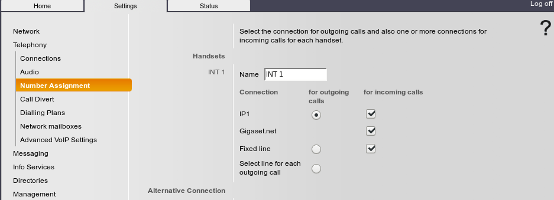
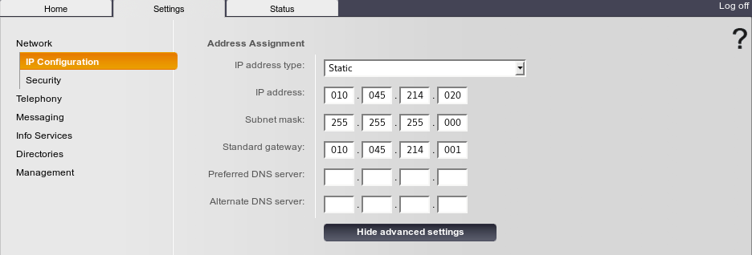
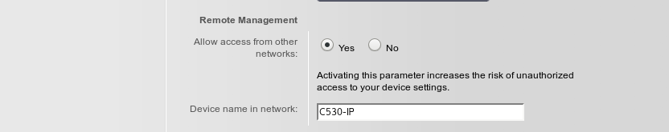
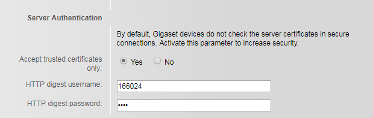

Gigaset IP DECT C530¶
La configuración de red por defecto es por DHCP y el password de acceso 0000
Elegimos la línea a configurar¶
Configuramos los datos de la extensión¶
El password, debe ser 0000
Configuramos los datos del Call Server¶
Para acceder a los datos del Call Server, tenemos que pulsar en el botón Show Advanced Settings
Nota
En casos en los que exista redundancia espacial, para que se resuelva la IP main, el DHCP debe asignar al terminal el DNS1 y DNS2 con las IPs de la CPUA y CPUB. Y en el dispositivo, como TFTP, se pone el nombre del nodo, además de tener activo el servicio DNS (resolvedor de nombres en netadmin) en la OXE.
Si configurara maualmente los DNS en el terminal, pondría las IPs de CPUA y CPUB
Configuramos datos de numeración¶
Configuramos datos de red y vlan¶
En el caso de redundancia espacial, las DNS, son las IP de CPU_A y CPU_B

Hay que configurar la gestión remota desde otras redes
Nota
Para que se pueda logar, hay que quitar en la OXE en método digest de autenticación. En caso contrario, da un error 401 Autenthication como respuesta al REGISTER
mgr -> SIP ->
Autenticacion: Ninguna
# Si está configurado como Asimilacion, corresponde a Digest
En caso de que queramos configiurar Autenticación HTTP Digest
